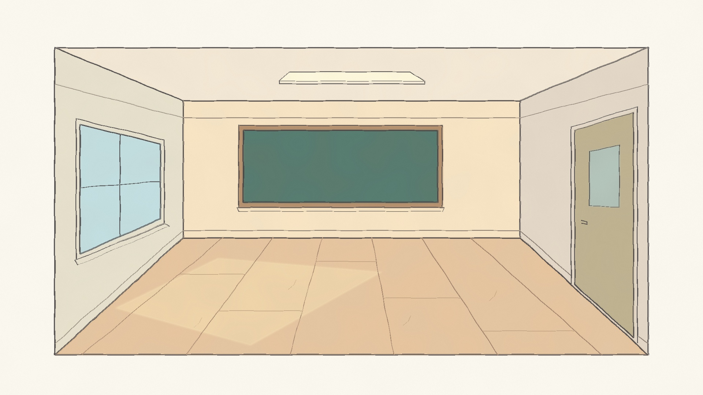

AI Basics · context · personal facts + research
Getting to know you takes up space.
Personal introductions, then research. Advance each teaching beat when you are ready.
Download silent MP4

Ready to enter
→ next beat · ← previous beat · Space play / pause · R replay · H hide controls · F fullscreen
Replay
Play full clip
Walk in →
Fullscreen
Walk in
1. Introduce yourself
2. Ask for research
3. Bring in MCP tools
4. Retrieve information
5. Watch the room fill
Next: compare context transport →